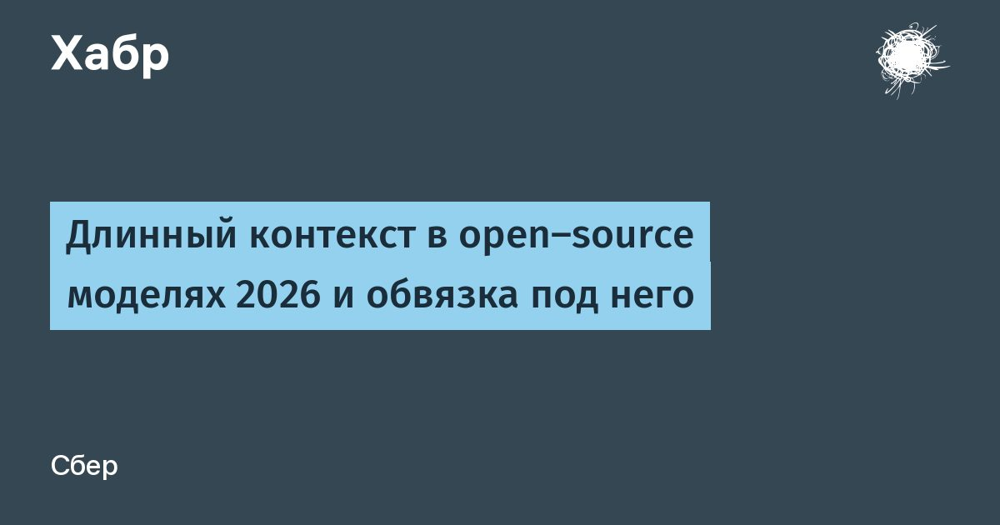

Длинный контекст в open-source моделях 2026 и обвязка под него
Привет, Хабр!
Я Владимир Лушин, делаю ИИ-агенты и инструменты для работы с кодом.
Статья, вроде, серьёзная, но с пуделями.
Так уж вышло, что дрессировка собаки объясняет внимание в LLM понятнее любых формул с softmax.В карточках свежих open-source моделей везде написано «1 млн контекста».
Внутри при этом точно читается совсем другое количество токенов: GLM-5.3 выбирает для каждого шага 2048 токенов из истории, DeepSeek-V4-Pro — 1024 сжатых блока, а у Qwen3.8 и Kimi K3 всю историю целиком видит лишь каждый четвёртый слой.Для агента это быстро становится вполне практической проблемой: правило из AGENTS.md к сотому вызову инструмента тихо перестаёт работать, и «ну вот же оно, в контексте!» уже не аргумент.
Я полез разбираться, как устроено внимание в открытых моделях 2026 года и что с этим делать в обвязке, чтобы агент не забывал правила к середине сессии.Примечание:- Все свежие открытые модели читают длинный контекст выборочно.
Три семейства: разрежённое top-k (GLM-5.x, DeepSeek-V4, MiniMax M3), гибриды «3 линейных + 1 полный» (Qwen3.5—3.8, Kimi K3, GLM-5.3-Flash), скользящее окно + глобальные слои (Gemma 4).- Гарантированно точно читаются только последние сотни токенов.
Всё остальное должно либо «выиграть отбор» по релевантности, либо дожить в сжатом виде.- У большинства моделей качество ломается где-то в районе 128—256 тыс., а Kimi K3 с компактизацией на 300 тыс.
обгоняет саму себя с полным окном в 1 млн.- Обвязке важнее, куда положить текст, чем что в нём написать.
Лучше всего работают чистка старого вывода инструментов, поиск по запросу вместо «залить всё», постепенное раскрытие, состояние вне окна, повтор правил в конце.- А то, что нельзя нарушать никогда, закрывайте хуками и правами доступа, вниманию такое доверять не стоит.Сразу поясню: часть конфигураций я читал прямо из config.json на Hugging Face, часть — из карточек и техотчётов.
Где данные вторичные, я это помечаю.
А всё про «что модель читает» я вывожу сам из архитектуры, разработчики такого нигде не заявляли.
Читать далее